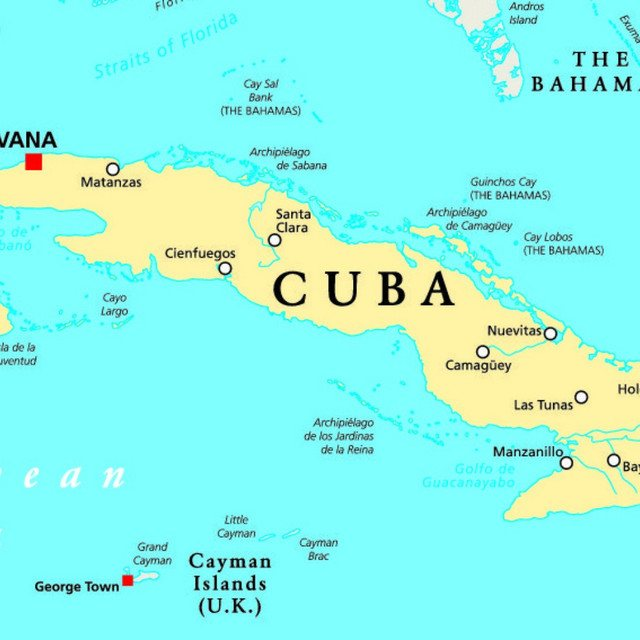

The Eclectic Polymath Podcast · Archive
#237 Obama's Incomplete Bill: The Healthcare Law That Never Finished the Job
About this episode
When Barack Obama signed the Affordable Care Act in March 2010, he called it the culmination of a century’s fight. Fifteen years later, even its defenders reach for the same word: incomplete. This episode takes that word apart — because the bill was left unfinished in three different ways, and they are not the same story.
Part of it was designed out: the public option traded away senator by senator, the deals cut with the drug and hospital industries, a law built on private insurers from the first sketch. Part of it was cut out: the Supreme Court made Medicaid expansion optional, opening a coverage gap that today holds about 1.2 million people, disproportionately Black and Southern. And part of it was unraveled later, in execution fights and in the 2025 rollback of the subsidies that had finally pushed enrollment to record highs.
Key points
- When Barack Obama signed the Affordable Care Act in March 2010, he called it the culmination of a century’s fight.
- The center of the episode is the Black America ledger.
- The gains are real: the Black uninsured rate was cut roughly in half, millions covered, a generation of young adults carried on their parents’ plans.
- So are the limits: maternal mortality still running three and a half times the white rate, medical debt on more than half of Black adults, and a race-neutral law poured into an unequal system.
- Critics and defenders from inside Black political debate — both argued at full strength.
More like this

#193 Why Cuba Is Where People Go to VanishOctober 6, 202651:56#194 Obama's Shadow Wars: Drones, Raids, and the Power Vacuums They Left BehindOctober 6, 202647:36